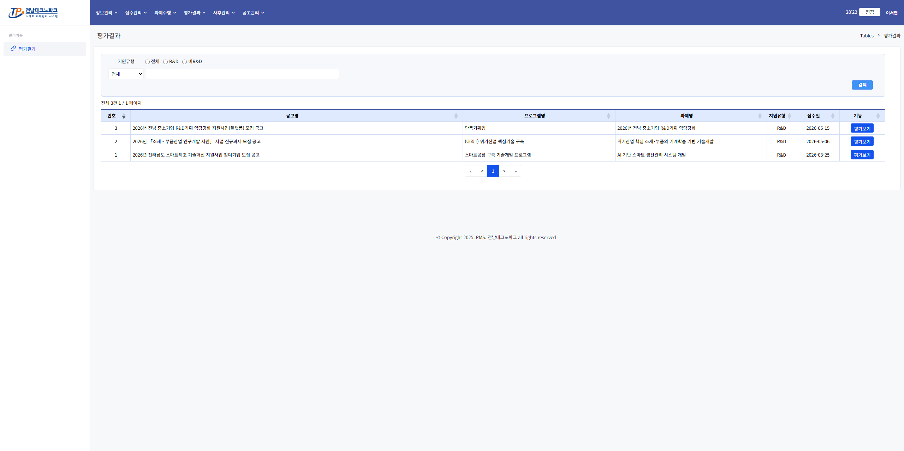
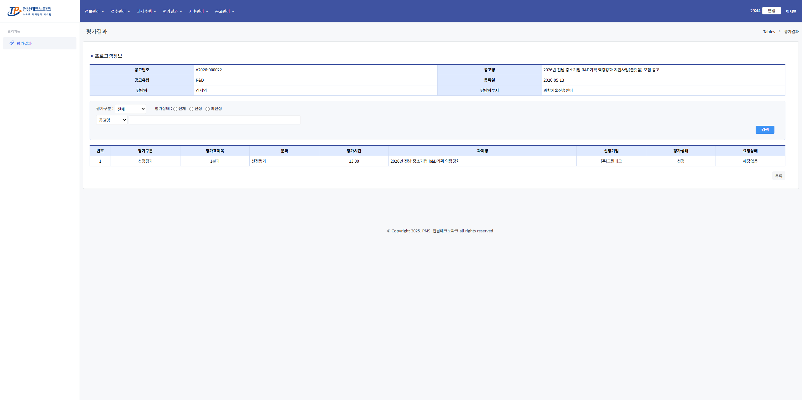
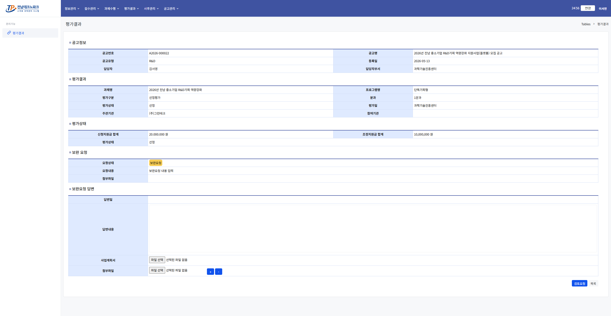

평가결과 확인 및 제출 사용자
1. 평가결과 과제 목록 진입
상단 메뉴 「평가결과」 클릭 → 신청한 과제 목록 확인 후 해당 행 클릭

2. 평가결과 목록 확인
공고별 평가결과 목록을 확인합니다. 상세 내용을 보려면 해당 행을 클릭합니다.

3. 평가결과 상세 확인 및 제출
총점·순위·선정 여부 등 상세 결과를 확인하고 관리자의 보완요청이 있을 경우 보완요청 답변내용 작성 후 「검토요청」 버튼 클릭

💡 안내
평가결과 제출 완료 후 선정된 기업은 협약정보 등록 단계로 진행합니다.